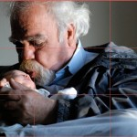

Posted on 03/04/2010. By Pete Otaqui.
So you’ve just got a shiny new DSLR camera (maybe a Nikon D3000 or something similar) to take nice pictures of your family. Some friends of mine are in this situation, so I thought I’d write a post with some tips.
Portraits
Portraits don’t always have to be formal and posed. I’d call this a portrait shot of my daughter showing off her face-pulling skills. There is one technical thing to note here, which will help all your portraits a lot – notice how everything
in the background is really blurry . There isn’t much background in this shot (and that’s another good thing in a portrait) but if you look at the curtain in the left, the check pattern is almost hidden. The fact that
the only thing in sharp focus is the subject of the portrait really makes it stand out. This picture also works because the subject is really in contrast with the background, but also has a couple of highlights that are brought out (her eyes
go really well with our kitchen wall!). Your camera will have a “Portrait” mode which will automatically try and open the aperture really wide, to get that nice “crisp subject, blurry background” look – and try zooming your lens to something
like 50mm.
Then there are more “classic” portraits like this one. While this wasn’t staged, I had a fairly good idea of what I wanted on the day – a really nice picture of my daughter with her Sido (grandfather). Something that *really* helps with all
photography is good lighting, and if you can’t afford vast sums for both a professional light rig and a team of monkeys to lug it around for you, then natural light is your best friend . Direct sunlight coming from the
side will often give your subject a lovely dark / light contrast, as in this picture.
If you look at a lot of “professional” pictures of babies, you’ll notice they are very often wrapped in a plain, white blanket (preferably natural fibres with a good texture). This makes the whole picture really cosy.
You can also try taking a picture of them “along their length” making sure you focus on their face or other interesting feature (toes are a favourite).
Composition & The Rule of Thirds
{kind=link}
{kind=link}
{kind=link}
 I’ve added in some rough lines dividing this image into thirds, to show you something about composition called the “rule of thirds”. If you imagine the frame of any imagedivided into thirds, you get four points around the centre that make excellent points of interest . This particular one isn’t perfectly on those points, but is near enough that the whole thing feels “balanced”.
{kind=link}
One of the great things about modern high resolution cameras, is that you can crop an image quite a lot and still have something that looks great. Don’t be afraid of shooting “more than you need” and then composing the image later in your computer
(or even on the camera if it has that feature). This is something I did a lot in the darkroom years ago, and it isn’t cheating!
Forget the Rules
You can, of course, forrget all the rules (although it does help if you know them before you break them ). Personally I love this picture even though it was an accident, the composition is weird and the colours are all
wrong, and no-one else seems to like it much. For me, there’s something about her perfect little hand and the fact that you can just make out she’s having a nap in her favourite chair.
{kind=link}